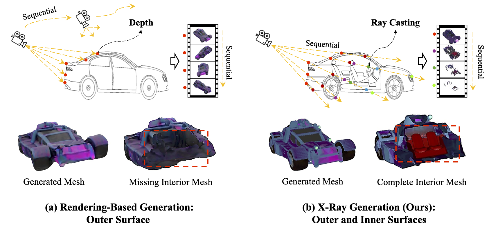
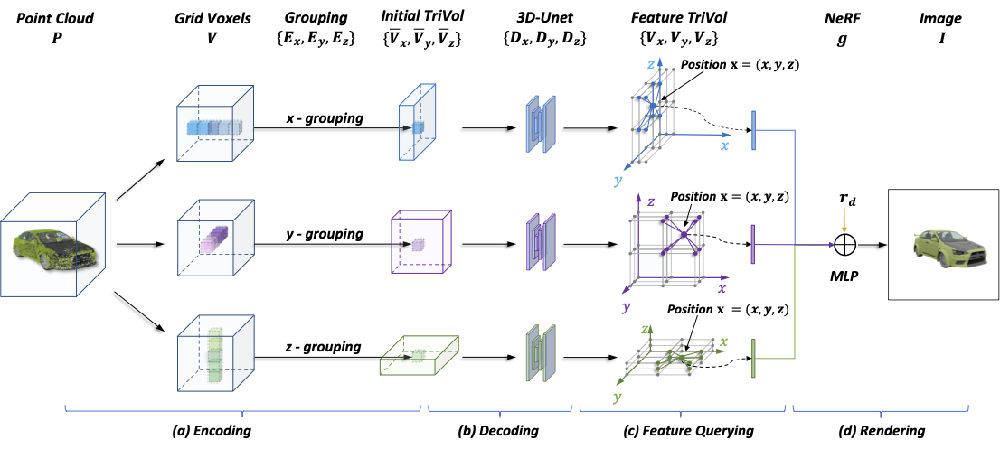

Dr. Tao Hu
Senior Research Scientist
|
 |
Biography [CV]
I am a Senior Research Scientist at ByteDance Inc. (Pico MR division) in the United States. Before that, I was a Research Manager (Post-Doctor) in National University of Singapore (NUS), School of Computing, in which I worked with Prof. Gim Hee Lee in 3D Computer Vision. I received the Doctor's Degree at Computer Science & Engineering Department, The Chinese University of Hong Kong (CUHK), under the supervision of Prof. Jiaya Jia. I obtained the Master degree in Computer Science, University of Chinese Academy of Sciences (UCAS) in 2019, supervised by Prof. Honggang Qi. I received the Bachelor degree in Automation Engineering from University of Electronic Science and Technology of China (UESTC) in 2016.
Previously, I founded RealityEdge which combines Large Model with Interaction for creative work.
My current research interests includes primarily in 3D Computer Vision and Graphics, particularly focusing on:
Efficient 3D Representation, 3D / 4D Scene Generation, 3D Rendering and Reconstruction.
Recent News
| Nov, 2024 | Particle Rendering: The paper proposed to improve reflective scene rendering was accepted by 3DV. |
| Sep, 2024 | X-Ray: [Update] The paper was accepted by NeurIPS-2024 as a Spotlight! |
| May, 2024 | X-Ray: We released a novel representation for 3D Generation from text or image! |
| Match, 2024 | One paper was accepted in CVPR-2024! |
| October, 2023 | Ref-NeuS: Our paper was selected as the ICCV-2023 Best Paper Candidates ! |
| July, 2023 | Ref-NeuS: One Oral paper was accepted by ICCV-2023 about 3D Object Reconstruction! |
| April, 2023 | ReTryOn: We released the application of Virtual TryOn within 10 seconds! |
| March, 2023 | RealityComposition: We released the source code of compositing images via Stable Diffusion! |
| March, 2023 | CVPR-2023: Our three papers were accepted by CVPR-2023! |
Selected Publications [Google Scholar]
|  |
X-Ray: A Sequential 3D Representation for Generation.
Tao Hu, Wenhang Ge, Yuyang Zhao, Gim Hee Lee.
NeurIPS-2024 Spotlight (< 3%)
|
|
Boosting Image Restoration via Priors from Pre-trained Models.
Xiaogang Xu, Shu Kong, Tao Hu, Zhe Liu, Hujun Bao.
CVPR-2024 Poster
|
|
 |
Ref-NeuS: Ambiguity-Reduced Neural Implicit Surface Learning for Multi-View Reconstruction with Reflection.
Wenhang Ge, Tao Hu, Haoyu Zhao, Shu Liu, Ying-Cong Chen.
ICCV-2023 Oral + Best Paper Candidate
|
|  |
TriVol: Point Cloud Rendering via Triple Volumes.
Tao Hu, Xiaogang Xu, Ruihang Chu, Jiaya Jia.
CVPR-2023
|
|
Point2Pix: Photo-Realistic Point Cloud Rendering
via Neural Radiance Fields. Tao Hu, Xiaogang Xu, Shu Liu, Jiaya.
CVPR-2023
|
|
 |
NeRFLix: High-Quality Neural View Synthesis by
Learning a Degradation-Driven Inter-viewpoint MiXer. Zhou Kun, Wenbo Li, Yi Wang, Tao Hu, Nianjuan Jiang,
Xiaoguang Han, Jiangbo Lu. CVPR-2023
|
|
EfficientNeRF: Efficient Neural Radiance Fields.
Tao Hu, Shu Liu, Yilun Chen, Tianchen Shen, Jiaya Jia.
CVPR-2022
|
|
|
Self-Supervised 3D Mesh Reconstruction from Single Images.
Tao Hu, Liwei Wang, Xiaogang Xu, Shu Liu, Jiaya Jia.
CVPR-2021
[Paper|Code]
|
|
 |
See better before looking closer: Weakly supervised data augmentation network for fine-grained visual classification.
Tao Hu, Honggang Qi, Qingming Huang, Yu Lu.
arXiv:1901.09891
[Paper|Code]
|
 |
Weakly Supervised Local Attention Network for Fine-Grained Visual Classification.
Tao Hu, Honggang Qi , Cong Huang , Qingming Huang ,Yan Lu ,Jizheng Xu.
arXiv:1808.02152
[Paper|Code]
|
 |
Facial landmarks detection by self-iterative regression based landmarks-attention network.
Tao Hu, Honggang Qi, Jizheng Xu, Qingming Huang.
AAAI-2018
[Paper]
|
 |
UA-DETRAC 2017: Report of AVSS2017 & IWT4S challenge on advanced traffic monitoring.
Siwei Lyu, Ming-Ching Chang, Dawei Du, Longyin Wen, Honggang Qi, Yuezun Li, Yi Wei, Lipeng Ke, Tao Hu, Marco Del Coco..
AVSS-2017
[Homepage | Paper]
|
Experiences
| Dec. 2024 - Present , Pico, Bytedance |

|
Aug. 2023 - Nov. 2024, National University of Singapore (NUS) |

|
Aug. 2019 - Aug. 2023, The Chinese University of Hong Kong (CUHK) Ph.D., Supervisor: Prof. Jiaya Jia |

|
Jan. 2018 - Oct. 2018, Microsoft Research Asia (MSRA) Internship, Mentor: Dr. Jizheng Xu, Dr. Yan Lu |
Honors and Awards
- Postgraduate Scholarship, CUHK, 2019-2023
- Won the Runner-up prize in the JDD pig face recognition Challenge.
- National Encouragement Scholarship, Beijing, 2013 and 2015
Professional Services
European Conference on Computer Vision (ECCV’24)
IEEE Conference on Computer Vision and Pattern Recognition (CVPR’20-24)
IEEE International Conference on Computer Vision (ICCV’19,21)
European Conference on Computer Vision (ECCV’20)
International Journal of Computer Vision (IJCV)
PATTERN RECOGNITION (PR)
Teaching
| 2021-2022 | Spring | ENGG5104: Image Processing and Computer Vision |
| 2019-2020 | Fall | CSCI1130: Introduction to Computing Using Java |
| 2019-2020 | Spring | CSCI3310: Mobile Computing and Applications Development |